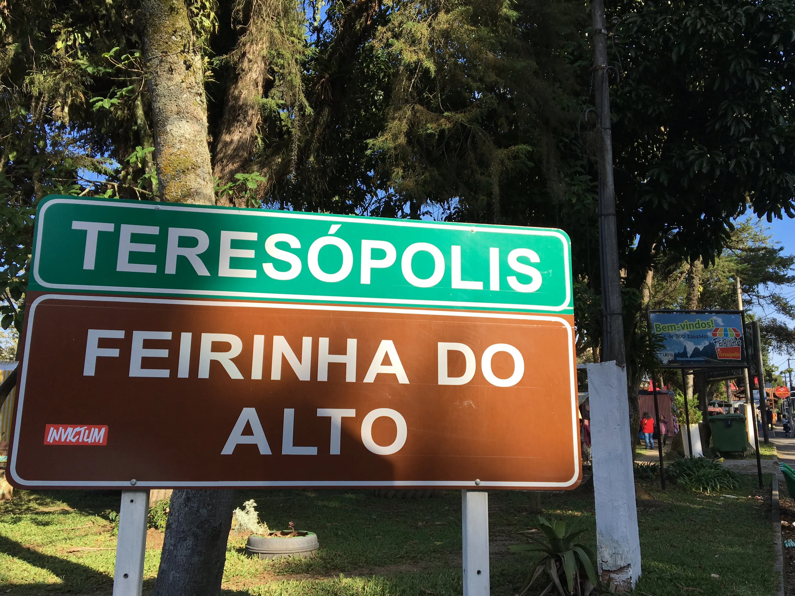

Teresópolis-Rj

A cidade de teresópolis se localiza no topo da serra dos órgãos na regiao serrana do estado do rio de janeiro
Uma curiosidade e q a cidade de teresópolis e a cidade q mais alta no estado do RJ, oque faz com q fassa muito frio dependendo da epoca do ano, oque pra quem cresceu la pode n ser muito um problema mas pra quem esta acostumado com o calor do RJ e bom trazer um casaco!
Alguns dos pontos turisticos de teresópolis
temos:
- Parque Nacional da Serra dos Órgãos
- Feirinha do Alto
- CBF
Parque Nacional

- coisas para fazer
voce pode andar nas varia trilhas que tem por la ir nas caichoeiras acampar, etc.
- oque pode vai encontrar
voce ira encontrar uma grande variedade de plantas e animais.
Feirinha

- Onde fica?
Fica no bairro alto
- coisas para fazer
A muitos tipos de barracas vendendo de roupa e comida a uma lareira artificial!
tambem tem dois Shoppings um com varias lojas de roupas e outro com varios tipos de restaurantes
caso va com crianças tem o trenzinho conhecido fora da cidade por carreta furacão

- oque pode acontecer
o mais legal e que voce pode ter a chance de encontrar Guilherme Briggs pois ele mora na cidade e sempre vai na feirinha
CBF

e claro que não podia faltar a casa da seleção Brasileira
em epoca de copa quando os jogadores estão la vc pode ver os jogadores treinando porem como fica dentro de um condominio nessa epoca apenas moradores podem entrar.